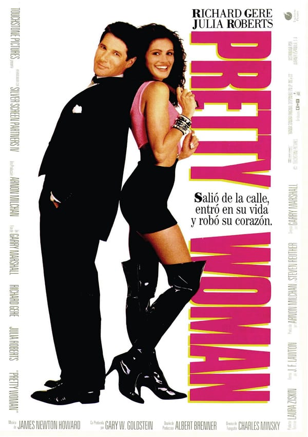
A charming story of unexpected love between two very different worlds.
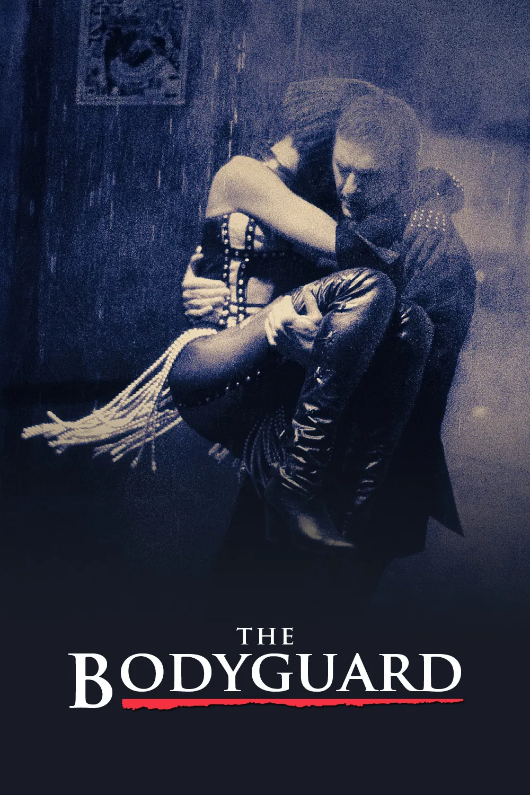
A romance surrounded by fame, danger, and unforgettable music.
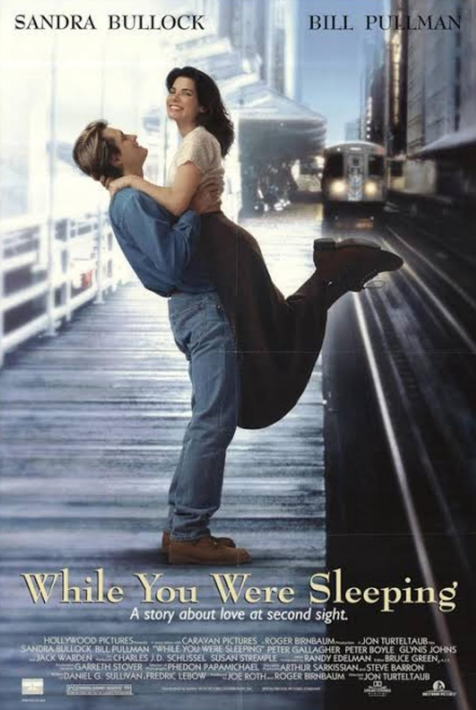
A gentle love story filled with warmth, family, and second chances.
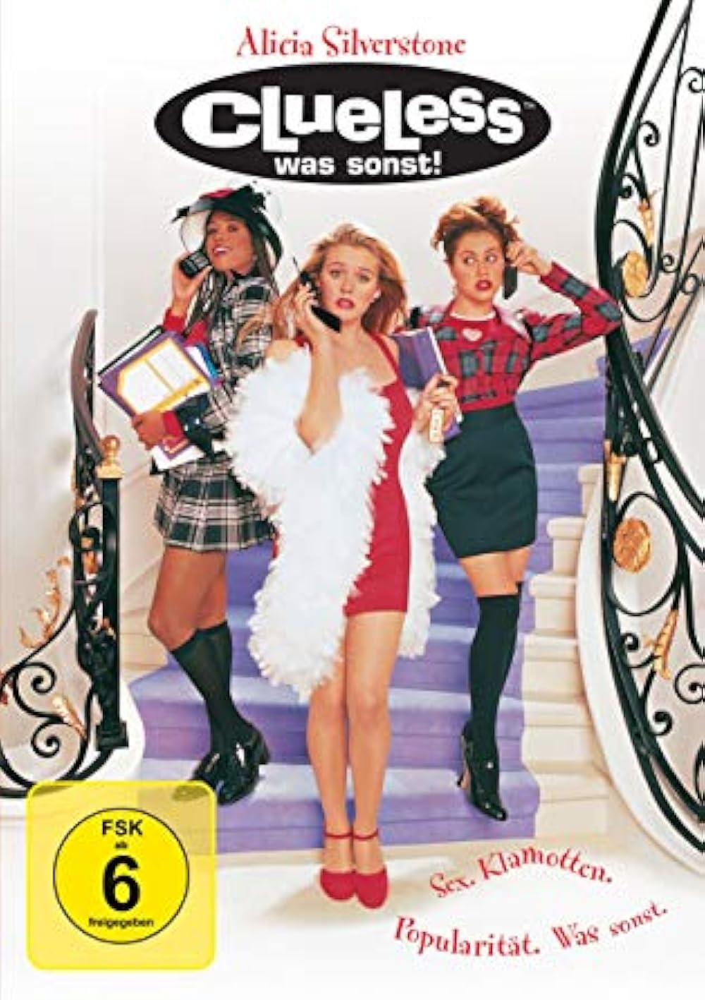
A bright, witty high-school comedy with iconic fashion and humor.
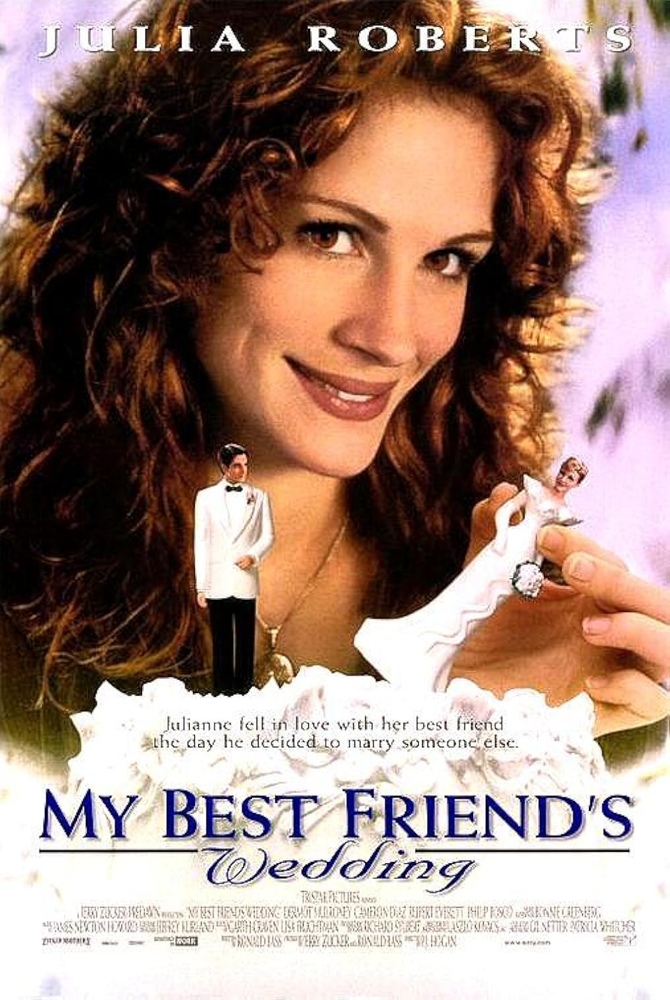
A funny and bittersweet story about love arriving too late.
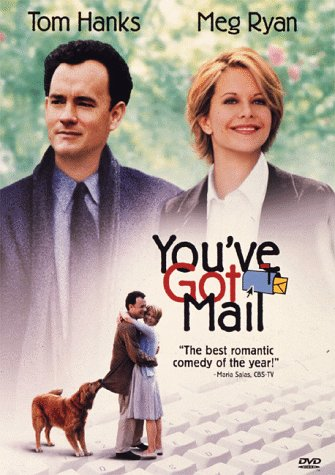
A comforting romance built through anonymous messages and slow connection.
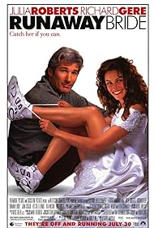
A playful story about self-discovery before saying yes to love.
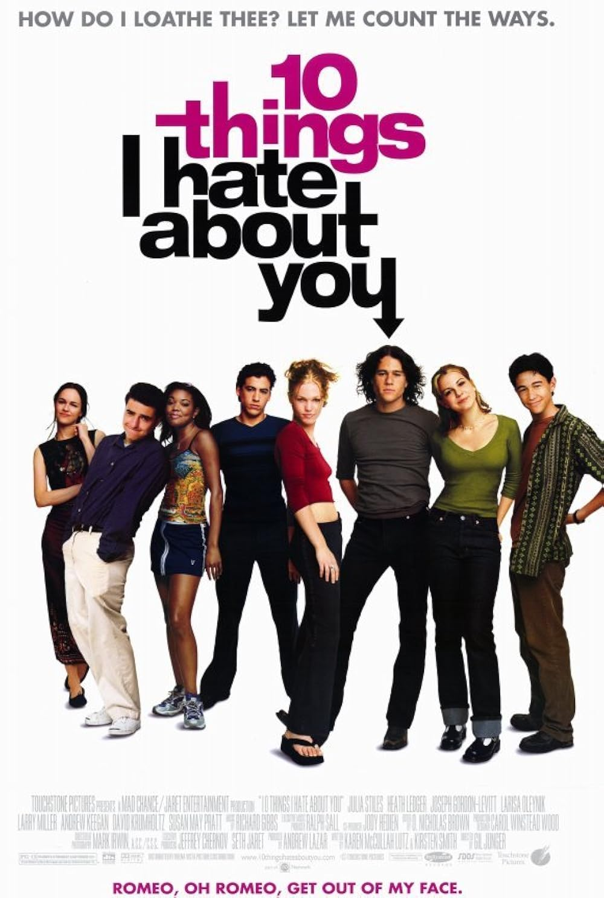
A sharp teen romance full of chemistry, humor, and attitude.
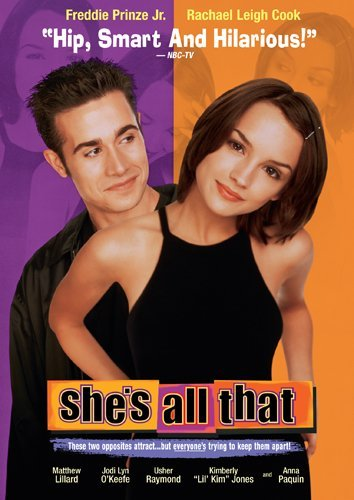
A classic makeover story with teenage charm and romance.
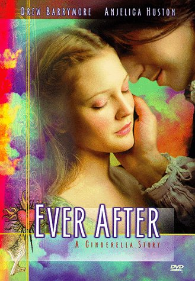
A soft and beautiful retelling of Cinderella with heart.
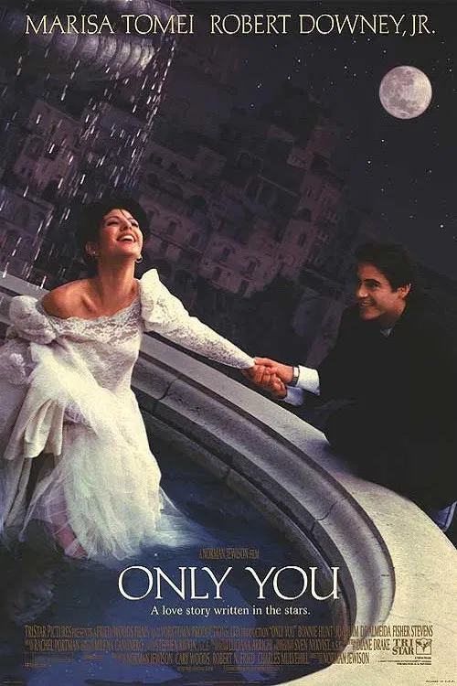
A romantic search across cities guided by fate and hope.
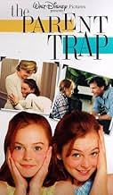
A delightful family favorite about twins switching places.
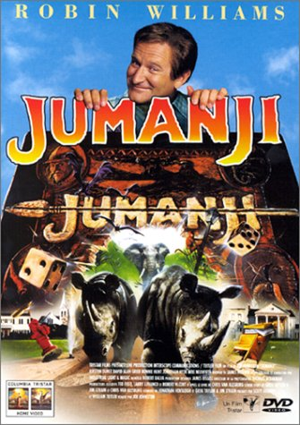
An adventurous fantasy where a board game changes everything.
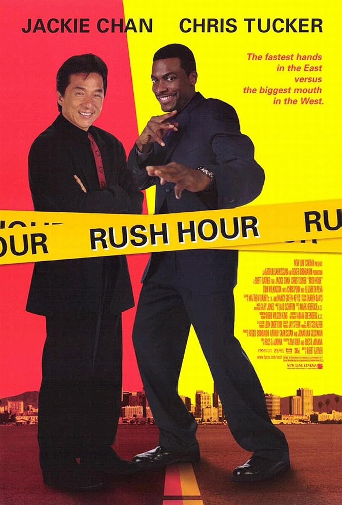
Fast-paced action mixed with comedy and unforgettable partnership.
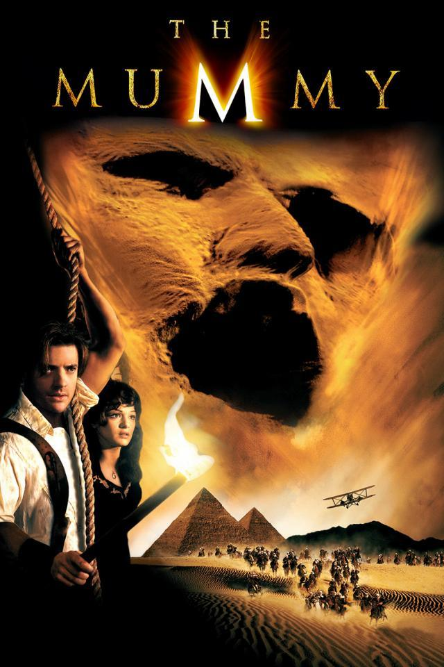
Adventure, mystery, humor, and timeless cinematic fun.
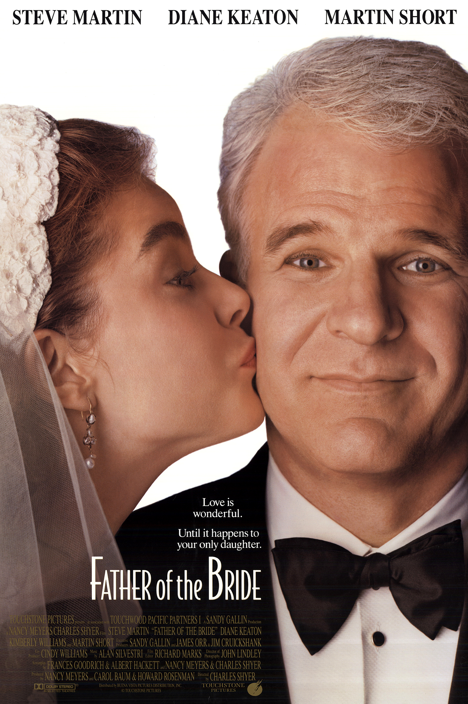
A warm family comedy about love, change, and letting go.
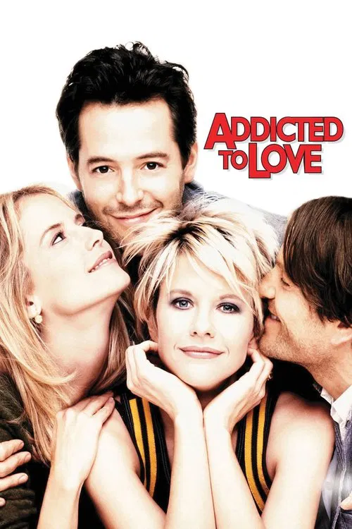
A playful revenge romance that turns unexpectedly emotional.
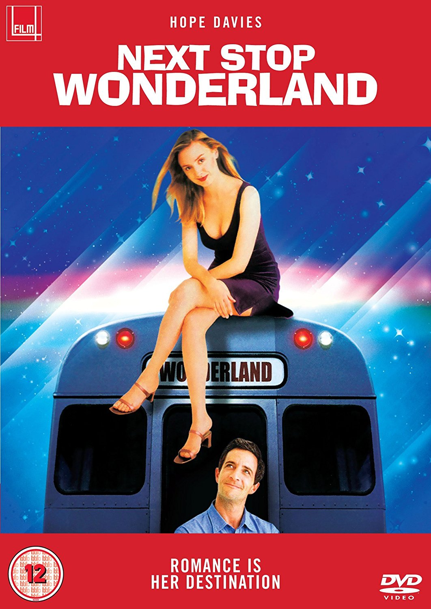
A quiet romantic story about missed chances and finding connection.
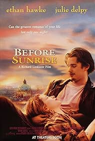
A simple but unforgettable conversation between two strangers.
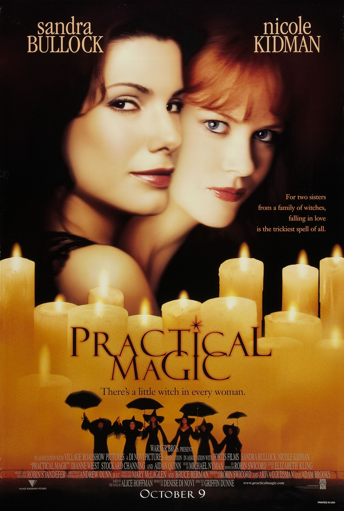
Magic, sisterhood, romance, and comforting autumn atmosphere.
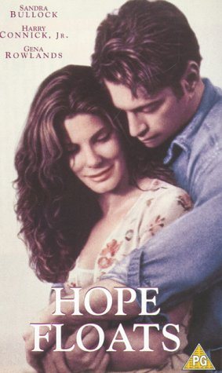
A healing story about rebuilding life and learning to trust again.